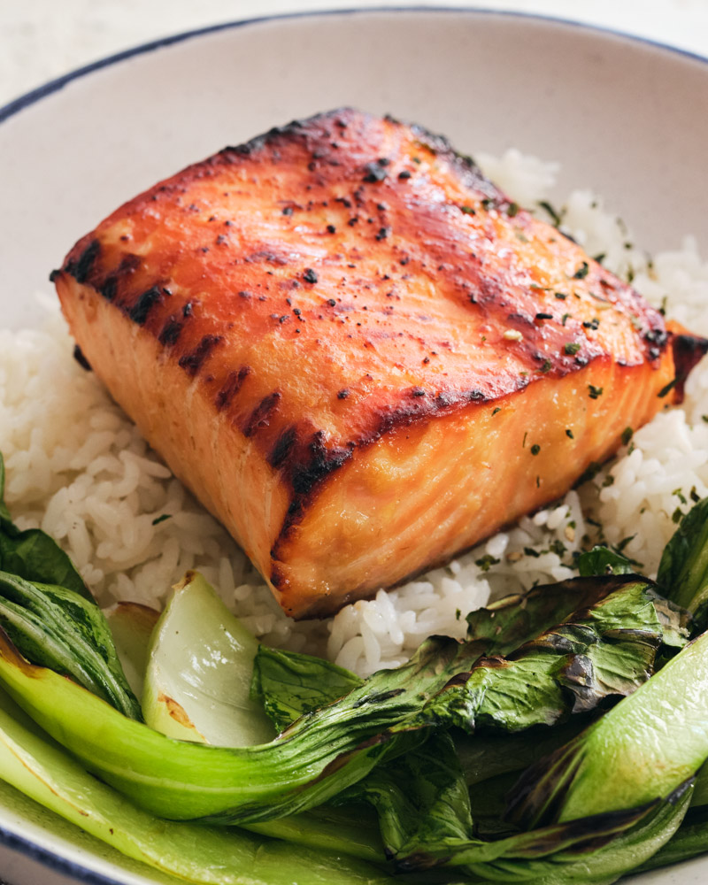

Miso Salmon
Home

A popular Japanese dish that combines the rich, savory flavor of miso with succulent, fatty salmon.
The best meals are sometimes the simplest ones, and this is certainly one of them. This salmon recipe features a
delicious caramelized miso glaze on the outside and stays flaky and moist in the middle. It is one of the most
beloved dining hall meals here at Amherst, and for good reason. While salmon is usually the most popular and
most accessible fish to use, the same marinade can be used on different types of fish like black cod or
butterfish. The cooking time may vary depending on the thickness of the filet and your specific oven settings,
so adjust accordingly. This is a classic dish to add to your weekday meal rotation as most of the preparation
time involves idle waiting time.
Ingredients
- 2 6 oz salmon filets
- 1/4 cup white miso paste
- 2 tbsp sake
- 2 tbsp mirin
- 2 tbsp soy sauce
- 2 tbsp granulated sugar
Steps
- In a bowl, whisk together miso, sake, mirin, soy sauce, and sugar.
- Add salmon to the marinade and coat evenly. Cover and chill for at least 30 minutes and up to 8 hours.
- Preheat oven on broiler setting and line a baking sheet with parchment paper.
- Wipe excess marinade from salmon and place on baking sheet, skin-side down.
- Broil for 5 to 7 minutes or until surface has browned and salmon is cooked through. If edges begin to burn, cover with a foil or place on lower oven rack.
- Serve with cooked rice, greens, and a sprinkle of furikake and enjoy!